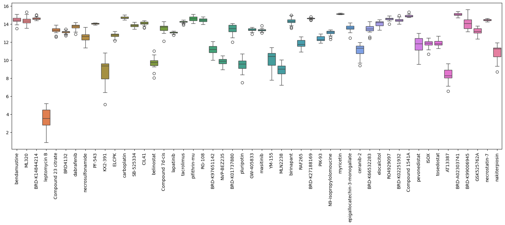
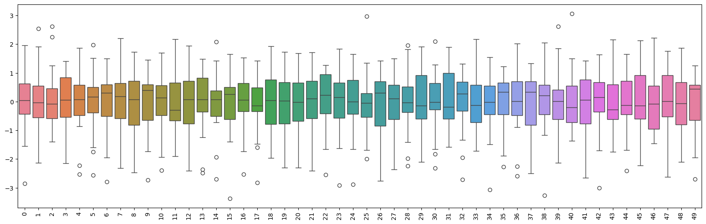
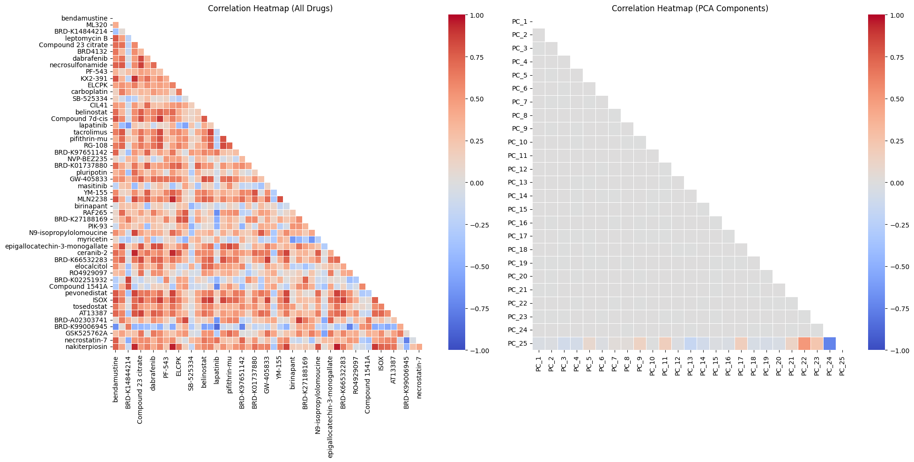
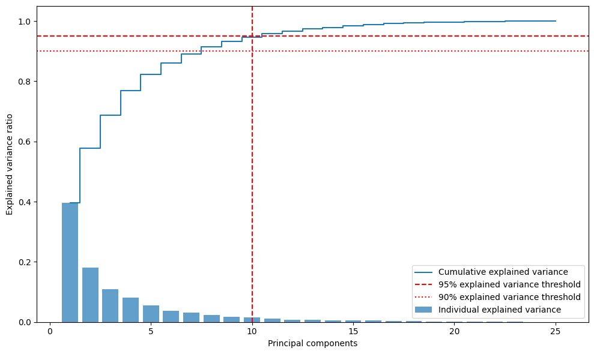
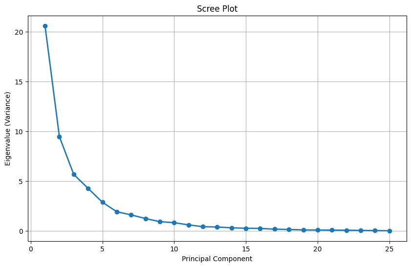
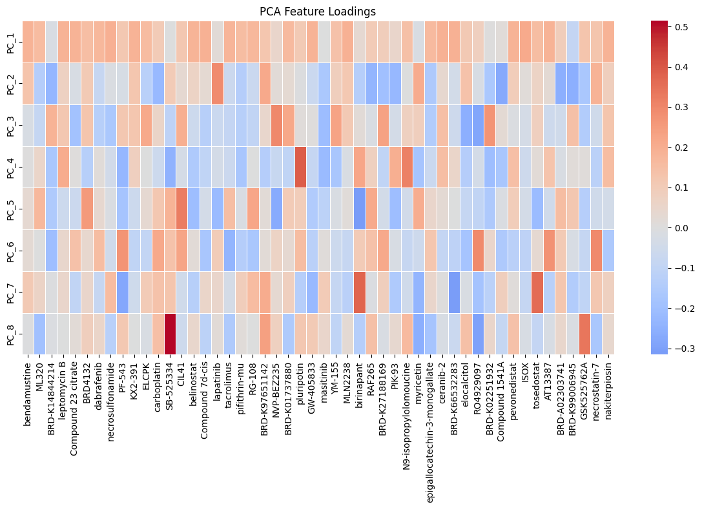

Unsupervised Learning
Q & A session: Principal component analysis (PCA) and K-means clustering
Instructor note
Participants were given 45-60 minutes to
go through the Jupter notebook and
select correct answers for the questions
Instructor narrate the answers and reasoning after the self-study time
time: 30 minutes
Dimensionality of the datasets
Questions
Question 1:
You have a dataset with 50 columns (drug compounds) and 25 rows (patients). Is this dataset considered high-dimensional?
A) No, because 50 columns is not a large number
B) No, because the dataset is too small overall
C) Yes, because there are more features (50) than samples (25)
D) Yes, because 25 patients is insufficient for any analysis
Question 2:
Why is your dataset with 50 drug compounds and 25 patients considered high-dimensional?
A) Because 50 is the threshold for high-dimensionality
B) Because the number of features (50) significantly exceeds the number of samples (25)
C) Because drug compound data is inherently high-dimensional
D) Because 25 patients represent too many medical conditions
Question 3:
In your dataset, the ratio of features to samples is 2:1 (50 features to 25 samples). This high-dimensional characteristic is most likely to cause:
A) Faster model training due to more information per patient
B) Better generalization because of the rich feature space
C) The “curse of dimensionality” and potential overfitting issues
D) Automatic feature selection by machine learning algorithms
Standardization
Questions
Before (A) / After standardization plots (B):
A. 
B. 
Question 1: Scale Uniformity After Standardization:
Comparing the original drug sensitivity scores (A) with the standardized versions (B), what is the most important change for PCA analysis?
A) The standardized data has fewer outliers than the original data
B) All drug compounds now have similar scales (roughly -3 to +3) instead of vastly different ranges
C) The standardized data shows stronger correlations between compounds
D) The standardized data has reduced the total number of features
Question 2: PCA Component Interpretation:
After standardization, all drug compounds now have approximately the same variance. How will this affect your PCA results compared to using the original unstandardized data?
A) PC1 will still be dominated by the originally high-variance compounds like leptoporin B
B) PCA components will now reflect actual biological/chemical relationships rather than just scale differences
C) PCA will find fewer meaningful components due to the uniform scaling
D) The explained variance percentages will be identical to the unstandardized analysis
Question 3: Practical PCA Decision:
You’re about to perform PCA for drug discovery research. Based on your standardization comparison, which approach would give you more interpretable principal components for identifying drug response patterns?
A) Use original data because it preserves the natural measurement scales of each drug
B) Use standardized data because it allows PCA to focus on underlying biological patterns rather than measurement scale artifacts
C) It doesn’t matter - PCA will automatically handle scale differences
D) Use original data because standardization removes important variance information
Question 4: Variance Landscape:
Looking at your standardized data plot where all compounds now have similar variance, what does this mean for PCA’s search for “maximum variance directions”?
A) PCA will no longer work because there’s no variance to capture
B) PCA will now find directions based on correlations and biological patterns rather than being biased by high-variance features
C) PCA will randomly select components since all variances are equal
D) PCA will focus only on outlier detection
Apply PCA transformation
Questions

Question 1:
Comparing the two heatmaps, what is the most significant difference between the correlation patterns of the original drug compounds (left) and the PCA components (right)?
A) The PCA components show stronger correlations than the original compounds
B) The original compounds are uncorrelated while PCA components are highly correlated
C) The original compounds show various correlation patterns, while PCA components are essentially uncorrelated (orthogonal)
D) Both heatmaps show identical correlation structures
Question 2:
In your PCA components heatmap (right), most correlations appear to be near zero (gray/white). This pattern demonstrates which fundamental property of PCA?
A) PCA randomly shuffles the original correlations
B) PCA creates principal components that are orthogonal (perpendicular) to each other, eliminating correlation
C) PCA amplifies the strongest correlations from the original data
D) PCA preserves all original correlation relationships between features
Question 3:
The original drug compounds heatmap shows clusters of correlated compounds (red blocks), while the PCA heatmap is predominantly gray. What does this tell you about what PCA has accomplished?
A) PCA has lost important information about drug relationships
B) PCA has transformed the correlated original features into a new set of uncorrelated components that still capture the data’s variance
C) PCA has created random noise instead of meaningful components
D) PCA has made the data analysis more complicated
Explained variance ratios
Questions

Question 1:
Your plot shows that 10 principal components explain 95% of the total variance (red dashed line). For a machine learning application, which approach would be most appropriate?
A) Always use all 25 components to avoid losing any information
B) Use exactly 10 components because they reach the 95% threshold
C) Use only PC1 since it explains the most variance (40%)
D) Choose the number of components based on your specific analysis goals and computational constraints
Question 2:
Examining the individual explained variance bars (blue), there’s a sharp drop after PC1 and PC2, then the contributions become much smaller. This pattern suggests:
A) The first two components capture the main data structure, while next ffew components may represent minor patterns and last few components represent noise
B) Only PC1 and PC2 are mathematically valid
C) Components 3-25 contain no useful information
D) This indicates an error in the PCA calculation
Question 3:
In the context of your drug sensitivity dataset, what does PC1’s 40% explained variance represent biologically?
A) 40% of the drugs are important for the analysis
B) The first principal component captures a major pattern of drug response variation across patients that accounts for 40% of the total variability
C) 40% of the patients respond similarly to drugs
D) 60% of the data is noise and should be discarded
Generate scree plot
Questions

Question 1:
In your scree plot, the eigenvalues drop sharply from PC1 (~21) to PC2 (~9) to PC3 (~6), then gradually flatten out after PC6-7. What is the logic behind choosing the number of components at the “elbow” point where the curve starts to flatten?
A) Components after the elbow contain no mathematical information
B) Components before the elbow capture major data patterns, while those after the elbow likely represent noise or minor variations
C) The elbow point is randomly determined and has no statistical meaning
D) You should always choose exactly at the steepest drop point
Question 2:
Looking at your scree plot, why do we typically avoid including principal components from the flat region (PC8 onwards, where eigenvalues are close to 0)?
A) These components are mathematically incorrect and will cause errors
B) These components represent very small amounts of variance and may capture noise rather than meaningful signal
C) These components take too much computational time to calculate
D) These components are always highly correlated with the first few components
Interpretation and Analysis
Questions

Question 1:
In this PCA loadings heatmap, some drug compounds show dark red or dark blue colors while others appear white/gray. What do these color intensities tell you about each compound’s contribution to the principal components?
A) Dark colors indicate drugs that are more effective therapeutically
B) Dark red/blue indicate high absolute loading values, meaning these compounds strongly contribute to defining that principal component
C) White/gray areas indicate missing data for those drug compounds
D) Color intensity represents the correlation between different drugs
Question 2:
Looking at PC1 (top row), you can see both red (positive) and blue (negative) loadings for different drug compounds. What does this pattern of positive and negative loadings indicate?
A) Positive loadings are “good” drugs and negative loadings are “bad” drugs
B) This indicates an error in the PCA calculation since all loadings should be positive
C) Compounds with positive loadings move in the same direction as PC1, while those with negative loadings move in the opposite direction
D) Positive and negative loadings cancel each other out, making PC1 meaningless
Question 3:
To understand what PC1 represents biologically in your drug sensitivity study, which compounds should you focus on for interpretation?
A) Only the compounds with positive loadings (red colors)
B) Only the compounds with negative loadings (blue colors)
C) The compounds with the highest absolute loadings (darker shades of red and blue), regardless of sign
D) The compounds with near-zero loadings (white/gray) because they’re most stable
Question 4:
If you wanted to name or characterize what biological pathway PC1 represents, how would you use the loading information?
A) Look up the biological functions of compounds with the highest absolute loadings in PC1
B) Only consider the single compound with the highest positive loading
C) Average all the loading values to get a general interpretation
D) Focus on compounds that appear in multiple principal components